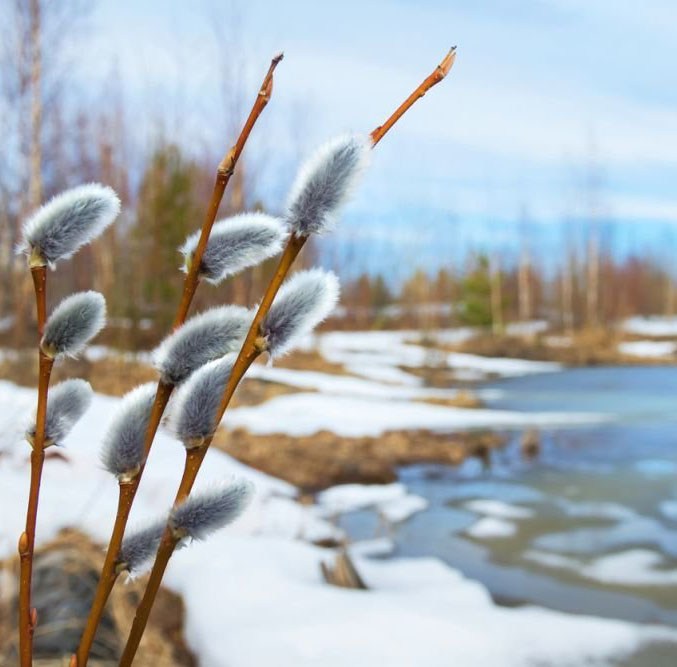
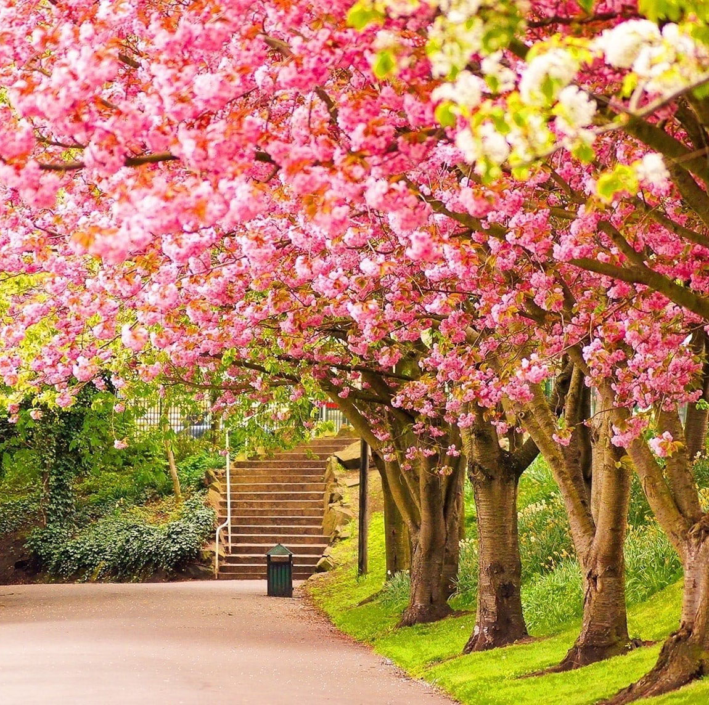
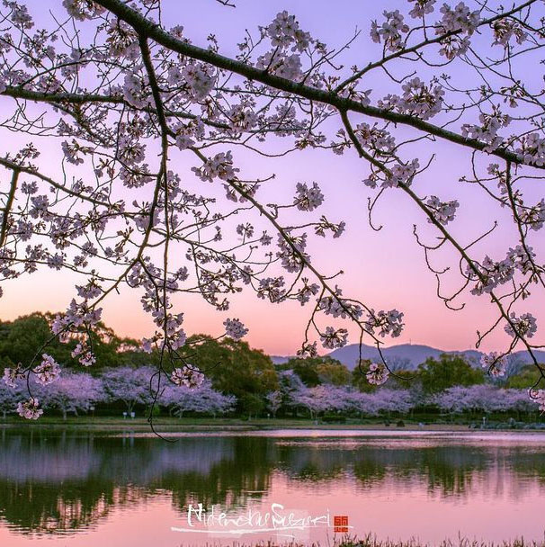
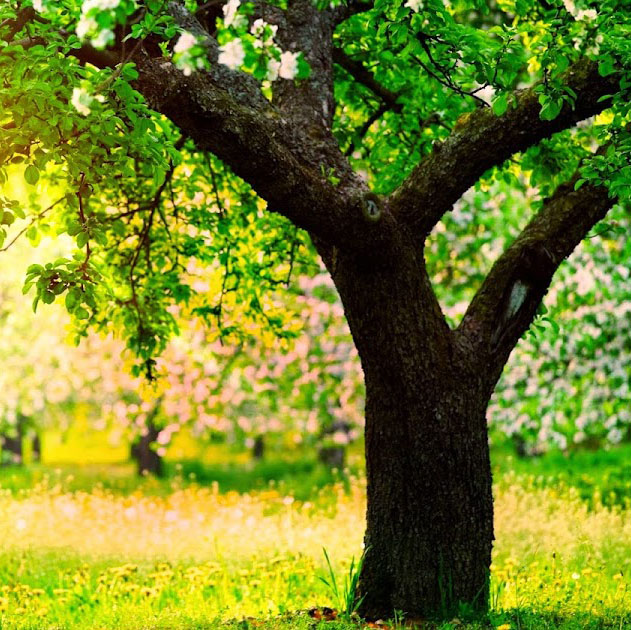

Весна
Весна
Весна — одна з чотирьох пір року між зимою та літом, характерна для помірних широт. Коли в Північній півкулі весна, у Південній півкулі буде осінь — і навпаки. Навесні відбувається рівнодення, коли тривалість дня дорівнює приблизно 12 годин і щодня збільшується упродовж цієї пори.
Календарна весна
Календарна весна складається з трьох місяців: березня, квітня і травня у Північній та вересня, жовтня і листопада у Південній півкулі. З початком березня Земля внаслідок руху навколо Сонця і нахилу осі до площини екліптики, нахиляється до Сонця своєю північною півкулею, тому тривалість світлового дня тут швидко збільшується. Земна поверхня починає краще нагріватися (сонячна енергія), що сприяє розвиткові рослин після зими. Сніг починає танути, течуть струмки, морози значно слабшають і згодом проявляються лише як заморозки. У безсніжному кліматі і за рідкісних морозів, температура повітря і землі підвищується ще швидше. Вже ранньою весною починають квітнути багато рослин-ефемерів, іноді починаючи з того часу, коли ще лежить сніг. Загалом весна є наслідком приходу сонячного тепла, однак на погоду впливають також інші, менш передбачувані, явища. Навесні погода буває особливо мінливою: з частими похолоданнями, вітрами, заморозками, різкими підняттями температури тощо. Нестійка весняна погода часто виникає, коли тепле повітря вторгається з нижчих широт, водночас холодне повітря все ще час від часу надходить з полярних регіонів. У цю пору року часто бувають повені, зокрема в гірських і передгірських районах, які спричиняє активне танення снігу, інколи посилене дощами. Наприклад, у Північній Америці, Коридор Торнадо найбільш активний в цей час року, насамперед тому, що скелясті гори не дозволяють розігнаним гарячим і холодним повітряним масам, розповсюджуватися на схід і замість цього, примушують їх вступати в пряме протистояння. Крім торнадо, грози цього осередку, також можуть викликати небезпечно потужний град і дуже сильні вітри, щодо яких зазвичай, оголошується попередження про сильну грозу або щодо торнадо. Навіть більшою мірою, ніж взимку, струменеві течії відіграють важливу роль в нестійкій і суворій погоді в Північній півкулі навесні. Весна в Україні — сезон з середньодобовою температурою від 0° до +15°С. Триває 100 діб в Карпатах і до 50 діб на сході країни; навесні переважає меридіональний (північ - південь) рух повітря.
Народні прикмети про весну
Співають синиці, чекай тепла.
Ластівка низько літає — дощ обіцяє.
Міцно спить кішка – до тепла.
Навесні павутиння багато- літо жарким буде.
Ранній приліт жайворонка — до ранньої весни.
